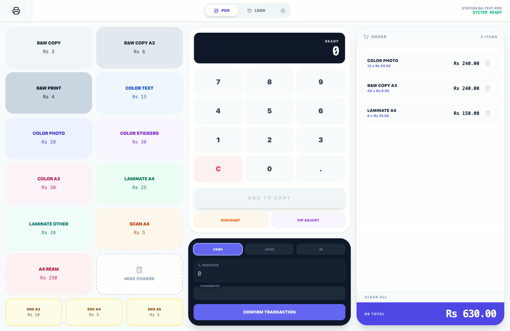

App screen, test dataPrint Shop POS
A point of sale for a print shop, fine-tuned with Claude Code. Each day’s log exports in one click to a monthly tab in Google Sheets. I fixed a keypad that vanished on Windows browsers and added layout tests: 60 pass across six screen sizes.
ReactTailwind CSSFirebase FirestoreGoogle SheetsGoogle Apps ScriptGemini CanvasPlaywright